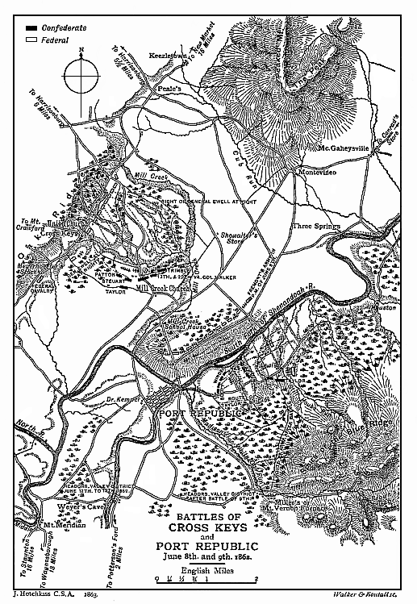

By the ignorant and the envious success in war is easily explained away. The dead military lion, and, for that matter, even the living, is a fair mark for the heels of a baser animal. The greatest captains have not escaped the critics. The genius of Napoleon has been belittled on the ground that each one of his opponents, except Wellington, was only second-rate. French historians have attributed Wellington’s victories to the mutual jealousy of the French marshals; and it has been asserted that Moltke triumphed only because his adversaries blundered. Judged by this rule few reputations would survive. In war, however, it is as impossible to avoid error as it is to avoid loss of life; but it is by no means simple either to detect or to take advantage of mistakes. Before both Napoleon and Wellington an unsound manœuvre was dangerous in the extreme. None were so quick to see the slip, none more prompt to profit by it. Herein, to a very great extent, lay the secret of their success, and herein lies the true measure of military genius. A general is not necessarily incapable because he makes a false move; both Napoleon and Wellington, in the long course of their campaigns, gave many openings to a resolute foe, and both missed opportunities. Under ordinary circumstances mistakes may easily escape notice altogether, or at all events pass unpunished, and the reputation of the leader who commits them will remain untarnished. But if he is pitted against a master of war a single false step may lead to irretrievable ruin; and he will be classed as beneath contempt for a fault which his successful antagonist may have committed with impunity a hundred times over.
THE FEDERAL PURSUIT 358
So Jackson’s escape from Winchester was not due simply to the inefficiency of the Federal generals, or to the ignorance of the Federal President. Lincoln was wrong in dispatching McDowell to Front Royal in order to cut off Jackson. When Shields, in execution of this order, left Fredericksburg, the Confederates were only five miles north of Winchester, and had they at once retreated McDowell must have missed them by many miles. McDowell, hotly protesting, declared, and rightly, that the movement he had been ordered to execute was strategically false. “It is impossible,” he said, “that Jackson can have been largely reinforced. He is merely creating a diversion, and the surest way to bring him from the lower Valley is for me to move rapidly on Richmond. In any case, it would be wiser to move on Gordonsville.”1 His arguments were unavailing. But when Jackson pressed forward to the Potomac, it became possible to intercept him, and the President did all he could to assist his generals. He kept them constantly informed of the movements of the enemy and of each other. He left them a free hand, and with an opponent less able his instructions would have probably brought about complete success. Nor were the generals to blame. They failed to accomplish the task that had been set them, and they made mistakes. But the task was difficult; and, if at the critical moment the hazard of their situation proved too much for their resolution, it was exactly what might have been expected. The initial error of the Federals was in sending two detached forces, under men of no particular strength of character, from opposite points of the compass, to converge upon an enemy who was believed to be superior to either of them. Jackson at once recognised the blunder, and foreseeing the consequences that were certain to ensue, resolved to profit by them. His escape, then, was the reward of his own sagacity.
When once the actual position of the Confederates had been determined, and the dread that reinforcements were coming down the Valley had passed away, the vigour of the Federal pursuit left nothing to be desired.
June 1 Directly it was found that the Confederates had gone south, on the after-
1 O.R., vol. xii, part iii, pp. 220, 229 (letter of S. P. Chase).
THE FEDERAL PURSUIT 359
noon of June 1, Shields was directed on Luray, and that night his advanced guard was ten miles beyond Front Royal; on the other side of the Massanuttons, Frémont, with Bayard’s cavalry heading his advance, moved rapidly on Woodstock.
The Federal generals, however, had to do with a foe who never relaxed his vigilance. Whilst Ashby and Ewell, on May 31, were engaged with Frémont at Cedar Creek, Jackson had expected that Shields would advance on Strasburg. But not a single infantry soldier was observed on the Front Royal road throughout the day. Such inaction was suspicious, and the probability to which it pointed had not escaped the penetration of the Confederate leader. His line of retreat was the familiar route by New Market and Harrisonburg to Port Republic, and thence to the Gaps of the Blue Ridge. There he could secure an unassailable position, within reach of the railway and of Richmond. But, during the movement, danger threatened from the valley of the South Fork. Should Shields adopt that line of advance the White House and Columbia bridges would give him easy access to New Market; and while Frémont was pressing the Confederates in rear, their flank might be assailed by fresh foes from the Luray Gap. And even if the retiring column should pass New Market in safety, Shields, holding the bridges at Conrad’s Store and Port Republic, might block the passage to the Blue Ridge. Jackson, looking at the situation from his enemy’s point of view, came to the conclusion that a movement up the valley of the South Fork was already in progress, and that the aim of the Federal commander would be to secure the bridges. His conjectures hit the mark.
Before leaving Front Royal Shields ordered his cavalry to march rapidly up the valley of the South Fork, and seize the bridge at Conrad’s Store; the White House and Columbia bridges he intended to secure himself. But Jackson was not to be so easily overreached.
June 2 On the night of June 2 the Federal cavalry reached Luray, to find that they had come too late. The White House and Columbia bridges had both been burned
THE FEDERAL PURSUIT 360
by a detachment of Confederate horse, and Shields was thus cut off from New Market. At dawn on the 4th, after a forced night march, his advanced guard reached Conrad’s Store to find that bridge also gone,1 and he was once more foiled. On his arrival at Luray, the sound of cannon on the other side of the Massanuttons was plainly heard. It seemed probable that Jackson and Frémont were already in collision; but Shields, who had written a few hours before to Mr. Stanton that with supplies and forage he could “stampede the enemy to Richmond,” was unable to stir a foot to assist his colleague.
Once again Jackson had turned to account the strategic possibilities of the Massanuttons and the Shenandoah; and, to increase General Shields’ embarrassment, the weather had broken. Heavy and incessant rain-storms submerged the Virginia roads. He was ahead of his supplies; much hampered by the mud; and the South Fork of the Shenandoah, cutting him off from Frémont, rolled a volume of rushing water which it was impossible to bridge without long delay.
Meanwhile, west of the great mountain, the tide of war, which had swept with such violence to the Potomac, came surging back. Frémont, by the rapidity of his pursuit, made full amends for his lack of vigour at Cedar Creek. A cloud of horsemen filled the space between the hostile columns. Day after day the quiet farms and sleepy villages on the Valley turnpike heard the thunder of Ashby’s guns. Every stream that crossed the road was the scene of a fierce skirmish; and the ripening corn was trampled under the hoofs of the charging squadrons. On June 2, the first day of the pursuit, between Strasburg and Woodstock the Federals, boldly led by Bayard, gained a distinct advantage. A dashing attack drove in the Confederate rear-guard, swept away the horse artillery, and sent Ashby’s and Steuart’s regiments, exhausted by hunger and loss of sleep, flying up the Valley. Many prisoners were taken, and the pursuit was
1 Of the existence of the bridge at Port Republic, held by a party of Confederate cavalry, the Federals do not appear to have been aware.
THE FEDERAL PURSUIT 361
only checked by a party of infantry stragglers, whom Ashby had succeeded in rallying across the road.
Next day, June 3, the skirmishing was continued; and the Confederates, burning the bridges across the roads, retreated to Mount Jackson.
June 4 On the 4th the bridge over the North Fork was given to the flames, Ashby, whose horse was shot under him, remaining to the last; and the deep and turbulent river placed an impassable obstacle between the armies. Under a deluge of rain the Federals attempted to launch their pontoons; but the boats were swept away by the rising flood, and it was not till the next morning that the bridge was made.
June 5 The Confederates had thus gained twenty-four hours’ respite, and contact was not resumed until the 6th. Jackson, meanwhile, constructing a ferry at Mount Crawford, had sent his sick and wounded to Staunton, thus saving them the long détour by Port Republic; and dispatching his stores and prisoners by the more circuitous route, had passed through Harrisonburg to Cross Keys, a clump of buildings on Mill Creek, where, on the night of the 5th, his infantry and artillery, with the exception of a brigade supporting the cavalry, went into bivouac.
June 6 On the afternoon of the 6th the Federal cavalry followed Ashby. Some three miles from Harrisonburg is a tract of forest, crowning a long ridge; and within the timber the Confederate squadrons occupied a strong position. The enemy, 800 strong, pursued without precaution, charged up a gentle hill, and were repulsed by a heavy fire. Then Ashby let loose his mounted men on the broken ranks, and the Federals were driven back to within half a mile of Harrisonburg, losing 4 officers and 30 men.
Smarting under this defeat, Frémont threw forward a still stronger force of cavalry, strengthened by two battalions of infantry. Ashby had already called up a portion of the brigade which supported him, and met the attack in a clearing of the forest. The fight was fierce. The Confederates were roughly handled by the Northern riflemen, and the ranks began to waver. Riding to the front,
DEATH OF ASHBY 362
where the opposing lines were already at close range, Ashby called upon his infantry to charge.
As he gave the order his horse fell heavily to the ground. Leaping to his feet in an instant, again he shouted, “Charge, men! for God’s sake, charge!” The regiments rallied, and inspired by his example swept forward from the wood. But hardly had they left the covert when their leader fell, shot through the heart. He was speedily avenged. The men who followed him, despite the heavy fire, dashed at the enemy in front and flank, and drove them from their ground. The cavalry, meanwhile, had worked round in rear; the horse artillery found an opportunity for action; and under cover of the night the Federals fell back on Harrisonburg.
The losses of the Union troops were heavy; but the Confederate victory was dearly purchased. The death of Ashby was a terrible blow to the Army of the Valley. From the outbreak of the war he had been employed on the Shenandoah, and from Staunton to the Potomac his was the most familiar figure in the Confederate ranks. His daring rides on his famous white charger were already the theme of song and story; and if the tale of his exploits, as told in camp and farm, sometimes bordered on the marvellous, the bare truth, stripped of all exaggeration, was sufficient in itself to make a hero. His reckless courage, his fine horsemanship, his skill in handling his command, and his power of stimulating devotion, were not the only attributes which incited admiration. “With such qualities,” it is said, “were united the utmost generosity and unselfishness, and a delicacy of feeling equal to a woman’s.” His loss came home with especial force to Jackson. After the unfortunate episode in the pursuit from Middletown, he had rated his cavalry leader in no measured terms for the indiscipline of his command; and for some days their intercourse, usually most cordial, had been simply official. Sensitive in the extreme to any reflection upon himself or his troops, Ashby held aloof; and Jackson, always stern when a breach of duty was concerned, made no overtures for a renewal of
DEATH OF ASHBY 363
friendly intercourse. Fortunately, before the fatal fight near Harrisonburg, they had been fully reconciled; and with no shadow of remorse Jackson was able to offer his tribute to the dead. Entering the room in Port Republic, whither the body had been brought, he remained for a time alone with his old comrade; and in sending an order to his cavalry, added, “Poor Ashby is dead. He fell gloriously—one of the noblest men and soldiers in the Confederate army.” A more public testimony was to come. In his official report he wrote: “The close relation General Ashby bore to my command for most of the previous twelve months will justify me in saying that as a partisan officer I never knew his superior. His daring was proverbial, his powers of endurance almost incredible, his character heroic, and his sagacity almost intuitive in divining the purposes and movements of the enemy.”
On the 6th and 7th the Confederate infantry rested on the banks of Mill Creek, near Cross Keys. The cavalry, on either flank of the Massanuttons, watched both Frémont’s camps at Harrisonburg and the slow advance of Shields; and on the southern peak of the mountains a party of signallers, under a staff officer, looked down upon the roads which converged on the Confederate position.
June 7 June 7 was passed in unwonted quiet. For the first time for fifteen days since the storming of Front Royal the boom of the guns was silent. The glory of the summer brooded undisturbed on hill and forest; and as the escort which followed Ashby to his grave passed down the quiet country roads, the Valley lay still and peaceful in the sunshine. Not a single Federal scout observed the melancholy cortège. Frémont’s pursuit had been roughly checked. He was uncertain in which direction the main body of the Confederates had retreated; and it was not till evening that a strong force of infantry, reconnoitring through the woods, struck Jackson’s outposts near the hamlet of Cross Keys. Only a few shots were exchanged.
Shields, meanwhile, had concentrated his troops at
SHIELDS IN DANGER 364
Columbia Bridge on the 6th, and presuming that Jackson was standing fast on the strong position at Rude’s Hill, was preparing to cross the river. Later in the day a patrol, which had managed to communicate with Frémont, informed him that Jackson was retreating, and the instructions he thereupon dispatched to the officer commanding his advanced guard are worthy of record:
”The enemy passed New Market on the 5th; Blenker’s division on the 6th in pursuit. The enemy has flung away everything, and their stragglers fill the mountain. They need only a movement on the flank to panic-strike them, and break them into fragments. No man has had such a chance since the war commenced. You are within thirty miles of a broken, retreating enemy, who still hangs together. 10,000 Germans are on his rear, who hang on like bull-dogs. You have only to throw yourself down on Waynesborough before him, and your cavalry will capture them by the thousands, seize his train and abundant supplies.”1
In anticipation, therefore, of an easy triumph, and, to use his own words, of “thundering down on Jackson’s rear,” Shields, throwing precaution to the winds, determined to move as rapidly as possible on Port Republic. He had written to Frémont urging a combined attack on “the demoralised rebels,” and he thought that together they “would finish Jackson.” His only anxiety was that the enemy might escape, and in his haste he neglected the warning of his Corps commander. McDowell, on dispatching him in pursuit, had directed his attention to the importance of keeping his division well closed up. Jackson’s predilection for dealing with exposed detachments had evidently been noted. Shields’ force, however, owing to the difficulties of the road, the mud, the quick-sands, and the swollen streams, was already divided into several distinct fractions. His advanced brigade was south of Conrad’s Store; a second was some miles in rear, and two were at Luray, retained at that point in consequence of a report that 8,000 Confederates were crossing the Blue
1 O.R., vol. xii, part iii, p. 352.
SHIELDS IN DANGER 365
Ridge by Thornton’s Gap. To correct this faulty formation before advancing he thought was not worth while. On the night of June 7 he was sure of his prey.
The situation at this juncture was as follows: Shields was stretched out over five-and-twenty miles of road in the valley of the South Fork; Frémont was at Harrisonburg; Ewell’s division was near Cross Keys, and the main body of the Valley Army near Port Republic.
During his retreat Jackson had kept his attention fixed on Shields. That ardent Irishman pictured his old enemy flying in confusion, intent only on escape. He would have been much astonished had he learned the truth. From the moment Jackson left Strasburg, during the whole time he was retreating, with the “bull-dogs” at his heels, he was meditating a counter-stroke, and his victim had already been selected. When Shields rushed boldly up the valley of the South Fork it seemed that an opportunity of avenging Kernstown was about to offer. On June 4, the day that the enemy reached Luray, Ewell was ordered to provide his men with two days’ cooked rations and to complete their ammunition “for active service.” The next day, however, it was found that Shields had halted. Ewell was ordered to stand fast, and Jackson wrote despondently to Lee: “At present I do not see that I can do much more than rest my command and devote its time to drilling.” On the 6th, however, he learned that Shields’ advanced guard had resumed its march; and, like a tiger crouching in the jungle, he prepared to spring upon his prey. But Frémont was close at hand, and Shields and Frémont between them mustered nearly 25,000 men. They were certainly divided by the Shenandoah; but they were fast converging on Port Republic; and in a couple of marches, if not actually within sight of each other’s camps, they would come within hearing of each other’s guns. Yet, notwithstanding their numbers, Jackson had determined to deal with them in detail.
A few miles from the camp at Port Republic was a hill honeycombed with caverns, known as the Grottoes of the Shenandoah. In the heart of the limestone Nature has
JACKSON’S PLAN OF ACTION 366
built herself a palace of many chambers, vast, silent, and magnificent. But far beyond the beauty of her mysterious halls was the glorious prospect which lay before the eyes of the Confederate sentries. Glimmering aisles and dark recesses, where no sunbeam lurks nor summer wind whispers, compared but ill with those fruitful valleys, watered by clear brown rivers, and steeped in the glow of a Virginian June. To the north stood the Massanuttons, with their forests sleeping in the noon-day; and to the right of the Massanuttons, displaying, in that transparent atmosphere, every shade of that royal colour from which it takes its name, the Blue Ridge loomed large against the eastern sky. Summit after summit, each more delicately pencilled than the last, receded to the horizon, and beneath their feet, still, dark, and unbroken as the primeval wilderness, broad leagues of woodland stretched far away over a lonely land.
No battle-field boasts a fairer setting than Port Republic; but, lover of Nature as he was, the region was attractive to Jackson for reasons of a sterner sort. It was eminently adapted for the purpose he had at heart.
1. The South Fork of the Shenandoah is formed by the junction of two streams, the North and South Rivers; the village of Port Republic lying on the peninsula between the two.
2. The bridge crosses the North River just above the junction, carrying the Harrisonburg road into Port Republic; but the South River, which cuts off Port Republic from the Luray Valley, is passable only by two difficult fords.
3. North of the village, on the left bank of the Shenandoah, a line of high bluffs, covered with scattered timber, completely commands the tract of open country which lies between the river and the Blue Ridge, and across this tract ran the road by which Shields was marching.
4. Four miles north-west of Port Republic, near the village of Cross Keys, the road to Harrisonburg crosses Mill Creek, a strong position for defence.
JACKSON’S PLAN OF ACTION 367
By transferring his army across the Shenandoah, and burning the bridge at Port Republic, Jackson could easily have escaped Frémont, and have met Shields in the Luray Valley with superior force. But the plain where the battle must be fought was commanded by the bluffs on the left bank of the Shenandoah; and should Frémont advance while an engagement was in progress, even though he could not cross the stream, he might assail the Confederates in flank with his numerous batteries. In order, then, to gain time in which to deal with Shields, it was essential that Frémont should be held back, and this could only be done on the left bank. Further, if Frémont could be held back until Shields’ force was annihilated, the former would be isolated. If Jackson could hold the bridge at Port Republic, and also prevent Frémont reaching the bluffs, he could recross when he had done with Shields, and fight Frémont without fear of interruption.
To reverse the order, and to annihilate Frémont before falling upon Shields, was out of the question. Whether he advanced against Frémont or whether he stood still to receive his attack, Jackson’s rear and communications, threatened by Shields, must be protected by a strong detachment. It would be thus impossible to meet Frémont with superior or even equal numbers, and an army weaker on the battlefield could not make certain of decisive victory.
Jackson had determined to check Frémont at Mill Creek. But the situation was still uncertain. Frémont had halted at Harrisonburg, and it was possible that he might advance no further. So the Confederates were divided, ready to meet either adversary; Ewell remaining at Cross Keys, and the Stonewall division encamping near Port Republic.
June 8 On the morning of June 8, however, it was found that Frémont was moving. Ewell’s division was already under arms. At 8.30 a.m. his pickets, about two miles to the front, became engaged, and the Confederate regiments moved leisurely into position.
The line ran along the crest of a narrow ridge, commanding an open valley, through which Mill Creek, an insignificant brook, ran parallel to the front. The further
A NARROW ESCAPE 368
slopes, open and unobstructed except for scattered trees and a few fences, rose gently to a lower ridge, about a mile distant. The ground held by the Confederates was only partially cleared, and from the Port Republic road in the centre, at a distance of six hundred yards on either flank, were woods of heavy timber, enclosing the valley, and jutting out towards the enemy. The ridge beyond the valley was also thickly wooded; but here, too, there were open spaces on which batteries might be deployed; and the forest in rear, where Ashby had been killed, standing on higher ground, completely concealed the Federal approach. The pickets, however, had given ample warning of the coming attack; and when, at 10 a.m., the hostile artillery appeared on the opposite height, it was received with a heavy fire. “Eight and a half batteries,” says Frémont, “were brought into action within thirty minutes.” Against this long array of guns the Confederates massed only five batteries; but these commanded the open ground, and were all in action from the first.
Ewell had with him no more than three brigades. The Louisiana regiments had bivouacked near Port Republic, and were not yet up. The whole strength of the troops which held the ridge was no more than 6,000 infantry, and perhaps 500 cavalry. Frémont had at least 10,000 infantry, twelve batteries, and 2,000 cavalry.
It was then against overwhelming numbers that Ewell was asked to hold his ground, and the remainder of the army was four miles in rear. Jackson himself was still absent from the field. The arrangements for carrying out his ambitious plans had met with an unexpected hitch. In the Luray Valley, from Conrad’s Store northwards, the space between the Blue Ridge and the Shenandoah was covered for the most part with dense forest, and through this forest ran the road. Moving beneath the spreading foliage of oak and hickory, Shields’ advanced brigade was concealed from the observation of the Confederate cavalry; and the signallers on the mountain, endangered by Frémont’s movement, had been withdrawn.
North of Port Republic, between the foot-hills of the
A NARROW ESCAPE 369
Blue Ridge and the Shenandoah, lies a level tract of arable and meadow, nearly a mile wide, and extending for nearly three miles in a northerly direction. On the plain were the Confederate pickets, furnished by three companies of Ashby’s regiment, with their patrols on the roads towards Conrad’s Store; and there seemed little chance that Shields would be able to reach the fords over the South River, much less the Port Republic bridge, without long notice being given of his approach. The cavalry, however, as had been already proved, were not entirely to be depended on. Jackson, whose headquarters were within the village, had already mounted his horse to ride forward to Cross Keys, when there was a distant fire, a sudden commotion in the streets, and a breathless messenger from the outposts reported that not only had the squadrons on picket been surprised and scattered, but that the enemy was already fording the South River.
Between the two rivers, south-west of Port Republic, were the Confederate trains, parked in the open fields. Here was Carrington’s battery, with a small escort; and now the cavalry had fled there were no other troops, save a single company of the 2nd Virginia, on this side the Shenandoah. The squadron which headed the Federal advanced guard was accompanied by two guns. One piece was sent towards the bridge; the other, unlimbering on the further bank, opened fire on the church, and the horsemen trotted cautiously forward into the village street. Jackson, warned of his danger, had already made for the bridge, and crossing at a gallop escaped capture by the barest margin of time. His chief of artillery, Colonel Crutchfield, was made prisoner, with Dr. McGuire and Captain Willis,1 and his whole staff was dispersed, save Captain Pendleton, a sterling soldier, though hardly more than a boy in years. And the danger was not over. With the trains was the whole of the reserve ammunition, and it seemed that a crushing disaster was near at hand. The sudden appearance of the enemy caused the greatest consternation amongst the teamsters; several of the waggons went off
1 All three of these officers escaped from their captors.
THE BRIGADE SAVED 370
by the Staunton road; and, had the Federal cavalry come on, the whole would have been stampeded. But Carrington’s battery was called to the front by Captain Moore, commanding the company of infantry in the village. The picket, promptly put into position, opened with a well-aimed volley, and a few rounds checked the enemy’s advance; the guns came rapidly and effectively into action, and at this critical moment Jackson intervened with his usual vigour.1 From the left bank of the North River he saw a gun bearing on the bridge, the village swarming with blue uniforms, and more artillery unlimbering across the river. He had already sent orders for his infantry to fall in, and a six-pounder was hurrying to the front. “I was surprised,” said the officer to whose battery this piece belonged, “to see a gun posted on the opposite bank. Although I had met a cavalry man who told me that the enemy were advancing up the river, still I did not think it possible they could have brought any guns into the place in so short a time. It thereupon occurred to me that the piece at the bridge might be one of Carrington’s, whose men had new uniforms something like those we saw at the bridge. Upon suggesting this to the general, he reflected a moment, and then riding a few paces to the left and front, he called out, in a tone loud enough to be heard by the enemy, ‘Bring that gun up here!’ but getting no reply, he raised himself in his stirrups, and in a most authoritative and seemingly angry tone he shouted, ‘Bring that gun up here, I say!’ At this they began to move the trail of the gun so as to bring it to bear on us, which, when the general perceived, he turned quickly to the officer in charge of my gun, and said in his sharp, quick way, ‘Let ’em have it!’ The words had scarcely left his lips when Lieutenant Brown, who had his piece charged and aimed, sent a shot right among them, so disconcerting them that theirs in reply went far above us.”2
1 According to General Shields’ account his cavalry had reported to him that the bridge at Port Republic had been burned, and he had therefore ordered his advanced guard to take up a defensive position and prevent the Confederates crossing the Shenandoah River. It was the head of the detachment which had dispersed the Confederate squadrons.
2 Related by Colonel Poague, C.S.A.
THE BRIGADE SAVED 371
The Confederate battalions, some of which had been formed up for inspection, or for the Sunday service, when the alarm was given, had now come up, and the 87th Virginia was ordered to capture the gun, and to clear the village. Without a moment’s hesitation the regiment charged with a yell across the bridge, and so sudden was the rush that the Federal artillerymen were surprised. The gun was double-shotted with canister, and the head of the column should have been swept away. But the aim was high and the Confederates escaped. Then, as the limber came forward, the horses, terrified by the heavy fire and the yells of the charging infantry, became unmanageable; and the gunners, abandoning the field-piece, fled through the streets of Port Republic. The 87th rushed forward with a yell. The hostile cavalry, following the gunners, sought safety by the fords; and as the rout dashed through the shallow water, the Confederate batteries, coming into action on the high bluffs west of the Shenandoah, swept the plain below with shot and shell.
The hostile artillery beyond the stream was quickly overpowered; horses were shot down wholesale; a second gun was abandoned on the road; a third, which had only two horses and a driver left, was thrown into a swamp; and a fourth was found on the field without either team or men.
The Federal infantry was not more fortunate. Carroll’s brigade of four regiments was close in rear of the artillery when the Confederate batteries opened fire. Catching the contagion from the flying cavalry, it retreated northward in confusion. A second brigade (Tyler’s) came up in support; but the bluffs beyond the river were now occupied by Jackson’s infantry; a stream of fire swept the plain; and as Shields’ advanced guard, followed by the Confederate cavalry, fell back to the woods whence it had emerged, five miles away on the other flank was heard the roar of the cannonade which opened the battle of Cross Keys.
From the hurried flight of the Federals it was evident that Shields’ main body was not yet up; so, placing two brigades in position to guard the bridge, Jackson sent
THE BRIGADE SAVED 372
the remainder to Ewell, and then rode to the scene of action.
Frémont, under cover of his guns, had made his preparations for attack; but the timidity which he had already displayed when face to face with Jackson had once more taken possession of his faculties. Vigorous in pursuit of a flying enemy, when that enemy turned at bay his courage vanished. The Confederate position was undoubtedly strong, but it was not impregnable. The woods on either flank gave access under cover to the central ridge. The superior weight of his artillery was sufficient to cover an advance across the open; and although he was without maps or guide, the country was not so intersected as to render manœuvring impracticable.
In his official report Frémont lays great stress on the difficulties of the ground; but reading between the lines it is easy to see that it was the military situation which overburdened him. The vicious strategy of converging columns, where intercommunication is tedious and uncertain, once more exerted its paralysing influence. It was some days since he had heard anything of Shields. That general’s dispatch, urging a combined attack, had not yet reached him: whether he had passed Luray or whether he had been already beaten, Frémont was altogether ignorant; and, in his opinion, it was quite possible that the whole of the Confederate army was before him.
A more resolute commander would probably have decided that the shortest way out of the dilemma was a vigorous attack. If Shields was within hearing of the guns—and it was by no means improbable that he was—such a course was the surest means of securing his co-operation; and even if no help came, and the Confederates maintained their position, they might be so crippled as to be unable to pursue. Defeat would not have been an irreparable misfortune. Washington was secure. Banks, Saxton, and McDowell held the approaches; and if Frémont himself were beaten back, the strategic situation could be in no way affected. In fact a defeat, if it had followed an attack so hotly pressed as to paralyse Jackson
CROSS KEYS 373
for the time being, would have been hardly less valuable than a victory.
“Fortune,” it has been well said, “loves a daring suitor, and he who throws down the gauntlet may always count upon his adversary to help him.” Frémont, however, was more afraid of losing the battle than anxious to win it. “Taking counsel of his fears,” he would run no risks. But neither could he abstain from action altogether. An enemy was in front of him who for seven days had fled before him, and his own army anticipated an easy triumph.
So, like many another general who has shrunk from the nettle danger, he sought refuge in half-measures, the most damning course of all. Of twenty-four regiments present on the field of battle, five only, of Blenker’s Germans, were sent forward to the attack. Their onslaught was directed against the Confederate right; and here, within the woods, Trimble had posted his brigade in a most advantageous position. A flat-topped ridge, covered with great oaks, looked down upon a wide meadow, crossed by a stout fence; and beyond the hollow lay the woods through which the Federals, already in contact with the Confederate outposts, were rapidly advancing. The pickets soon gave way, and crossing the meadow found cover within the thickets, where Trimble’s three regiments lay concealed. In hot pursuit came the Federal skirmishers, with the solid lines of their brigade in close support. Steadily moving forward, they climbed the fence and breasted the gentle slope beyond. A few scattered shots, fired by the retreating pickets, were the only indications of the enemy’s presence; the groves beyond were dark and silent. The skirmishers had reached the crest of the declivity, and the long wave of bayonets, following close upon their tracks, was within sixty paces of the covert, when the thickets stirred suddenly with sound and movement. The Southern riflemen rose swiftly to their feet. A sheet of fire ran along their line, followed by a crash that resounded through the woods; and the German regiments, after a vigorous effort to hold their ground, fell back in disorder across the clearing. Here, on the further edge, they rallied on their reserves, and the Confederates,
CROSS KEYS 374
who had followed up no further than was sufficient to give impetus to the retreat, were once more withdrawn.
A quarter of an hour passed, and as the enemy showed no inclination to attempt a second advance across the meadow, where the dead and wounded were lying thick, Trimble, sending word to Ewell of his intention, determined to complete his victory. More skilful than his enemies, he sent a regiment against their left, to which a convenient ravine gave easy access, while the troops among the oaks were held back till the flank attack was fully developed. The unexpected movement completely surprised the Federal brigadier. Again his troops were driven in, and the Confederates, now reinforced by six regiments which Ewell had sent up, forced them with heavy losses through the woods, compelled two batteries, after a fierce fight, to limber up, routed a brigade which had been sent by Frémont to support the attack, and pressing slowly but continuously forward, threw the whole of the enemy’s left wing, consisting of Blenker’s eleven regiments, back to the shelter of his line of guns. Trimble had drawn the “bulldog’s” teeth.
The Confederates had reached the outskirts of the wood. They were a mile in advance of the batteries in the centre; and the Federal position, commanding a tract of open ground, was strong in itself and strongly held. A general counterstroke was outside the scope of Jackson’s designs. He had still Shields to deal with. The Federal left wing had been heavily repulsed, but only a portion of Frémont’s force had been engaged; to press the attack further would undoubtedly have cost many lives, and even a partial reverse would have interfered with his comprehensive plan.
In other quarters of the battle-field the fighting had been unimportant. The Confederate guns, although heavily outnumbered, held their ground gallantly for more than five hours; and when they eventually retired it was from want of ammunition rather than from loss of moral. The waggons which carried their reserve had taken a wrong road, and at the critical moment there were no
CROSS KEYS 375
means of replenishing the supply. But so timid were Frémont’s tactics that the blunder passed unpunished. While the battle on the left was raging fiercely he had contented himself elsewhere with tapping feebly at the enemy’s lines. In the centre of the field his skirmishers moved against Ewell’s batteries, but were routed by a bayonet charge; on the right, Milroy and Schenck, the two generals who had withstood Jackson so stubbornly at McDowell, advanced on their own initiative through the woods. They had driven in the Confederate skirmishers, and had induced Ewell to strengthen this portion of his line from his reserve, when they were recalled by Frémont, alarmed by Trimble’s vigorous attack, to defend the main position.
The Southerners followed slowly. The day was late, and Ewell, although his troops were eager to crown their victory, was too cool a soldier to yield to their impatience; and, as at Cedar Creek, where also he had driven back the “Dutch” division, so at Cross Keys he rendered the most loyal support to his commander. Yet he was a dashing fighter, chafing under the restraint of command, and preferring the excitement of the foremost line. “On two occasions in the Valley,” says General Taylor, “during the temporary absence of Jackson, he summoned me to his side, and immediately rushed forward amongst the skirmishers, where sharp work was going on. Having refreshed himself, he returned with the hope that “Old Jack would not catch him at it.”1
How thoroughly Jackson trusted his subordinate may be inferred from the fact that, although present on the field, he left Ewell to fight his own battle. The only instructions he gave showed that he had fathomed the temper of Frémont’s troops. “Let the Federals,” he said, “get very close before your infantry fire; they won’t stand long.” It was to Ewell’s dispositions, his wise use of his reserves, and to Trimble’s ready initiative, that Frémont’s defeat was due. Beyond sending up a couple of brigades from Port Republic, Jackson gave no orders. His ambition was of too lofty a
1 Destruction and Reconstruction, p. 39.
CROSS KEYS 376
kind to appropriate the honours which another might fairly claim; and, when once battle had been joined, interference with the plan on which it was being fought did not commend itself to him as sound generalship. He was not one of those suspicious commanders who believe that no subordinate can act intelligently. If he demanded the strictest compliance with his instructions, he was always content to leave their execution to the judgment of his generals; and with supreme confidence in his own capacity, he was still sensible that his juniors in rank might be just as able. His supervision was constant, but his interference rare; and it was not till some palpable mistake had been committed that he assumed direct control of his divisions or brigades. Nor was any peculiar skill needed to beat back the attack of Frémont. Nothing proves the Federal leader’s want of confidence more clearly than the tale of losses. The Confederate casualties amounted to 288, of which nearly half occurred in Trimble’s counterstroke. The Federal reports show 684 killed, wounded, and missing, and of these Trimble’s riflemen accounted for nearly 500, one regiment, the 8th New York, being almost annihilated; but such losses, although at one point severe, were altogether insignificant when compared with the total strength; and it was not the troops who were defeated but the general.1
Ewell’s division bivouacked within sight of the enemy’s watch-fires, and within hearing of his outposts; and throughout the night the work of removing the wounded, friend and foe alike, went on in the sombre woods. There was work, too, at Port Republic. Jackson, while his men slept, was all activity. His plans were succeeding admirably. From Frémont, cowering on the defensive before inferior numbers, there was little to be feared. It was unlikely that after his repulse he would be found more enterprising on the morrow; a small force would be sufficient to arrest his march until Shields had been crushed; and then, swinging back across the Shenandoah,
1 The Confederates at Kernstown lost 20 per cent.; the Federals at Port Republic 18 per cent. At Manassas the Stonewall Brigade lost 16 per cent., at Cross Keys Ewell only lost 8 per cent. and Frémont 5 per cent.
PLANS FOR THE NEXT DAY 377
the soldiers of the Valley would find ample compensation, in the rout of their most powerful foe, for the enforced rapidity of their retreat from Winchester. But to fight two battles in one day, to disappear completely from Frémont’s ken, and to recross the rivers before he had time to seize the bridge, were manœuvres of the utmost delicacy, and needed most careful preparation.
It was Jackson’s custom, whenever a subordinate was to be entrusted with an independent mission, to explain the part that he was to play in a personal interview. By such means he made certain, first, that his instructions were thoroughly understood; and, second, that there was no chance of their purport coming to the knowledge of the enemy. Ewell was first summoned to headquarters, and then Patton, whose brigade, together with that of Trimble, was to have the task of checking Frémont the next day. “I found him at 2 a.m.,” says Patton, “actively engaged in making his dispositions for battle. He immediately proceeded to give me particular instructions as to the management of the men in covering the rear, saying: ‘I wish you to throw out all your men, if necessary, as skirmishers, and to make a great show, so as to cause the enemy to think the whole army are behind you. Hold your position as well as you can, then fall back when obliged; take a new position, hold it in the same way, and I will be back to join you in the morning.’ ”
Colonel Patton reminded him that his brigade was a small one, and that the country between Cross Keys and the Shenandoah offered few advantages for protracting such manœuvres. He desired, therefore, to know for how long he would be expected to hold the enemy in check. Jackson replied, “By the blessing of Providence, I hope to be back by ten o’clock.”1
These interviews were not the only business which occupied the commanding general. He arranged for the feeding of his troops before their march next day,2 for the
1 Southern Historical Society Papers, vol. ix, p. 372.
2 Rations appear to have been short, for General Ewell reports that when he marched against Shields the next day many of his men had been without food for four-and-twenty hours.
PLANS FOR THE NEXT DAY 378
dispositions of his trains and ammunition waggons; and at the rising of the moon, which occurred about midnight, he was seen on the banks of the South River, superintending the construction of a bridge to carry his infantry dryshod across the stream.
An hour before daybreak he was roused from his short slumbers. Major Imboden, who was in charge of a mule battery,1 looking for one of the staff, entered by mistake the general’s room.
“I opened the door softly, and discovered Jackson lying on his face across the bed, fully dressed, with sword, sash, and boots all on. The low-burnt tallow-candle on the table shed a dim light, yet enough by which to recognise him. I endeavoured to withdraw without waking him. He turned over, sat upon the bed, and called out, ‘Who is that?’
“He checked my apology with, ‘That is all right. It’s time to be up. I am glad to see you. Were the men all up as you came through camp?’
“ ‘Yes, General, and cooking.’
“ ‘That’s right; we move at daybreak. Sit down. I want to talk to you.’
“I had learned never to ask him questions about his plans, for he would never answer such to anyone. I therefore waited for him to speak first. He referred very feelingly to Ashby’s death, and spoke of it as an irreparable loss. When he paused I said, ‘General, you made a glorious winding-up of your four weeks with yesterday.’ He replied, ‘Yes, God blessed our army again yesterday, and I hope with His protection and blessing we shall do still better to-day.’ ”2 Then followed instructions as to the use of the mule battery in the forests through which lay Shields’ line of advance.
Before 5 a.m. the next morning the Stonewall Brigade
1 The mule battery does not appear to have done much more than afford the Confederate soldiers an opportunity of airing their wit. With the air of men anxiously seeking for information they would ask the gunners whether the mule or the gun was intended to go off first? and whether the gun was to fire the mule or the mule the gun?
2 Battles and Leaders, vol. ii, p. 293.
PORT REPUBLIC 379
had assembled in Port Republic, and was immediately ordered to advance. On the plain beyond, still dark in the shadow of the mountains, where the cavalry formed the outposts, the fire of the pickets, which had been incessant throughout the night, was increasing in intensity. The Federals were making ready for battle.
Winder had with him four regiments, about 1,200 strong, and two batteries. In rear came Taylor with his Louisianians; and Jackson, leaving Major Dabney to superintend the passage of the river, rode with the leading brigade. The enemy’s pickets were encountered about a mile and a half down the river, beyond a strip of woods, on either side of the Luray road. They were quickly driven in, and the Federal position became revealed. From the foot-hills of the Blue Ridge, clothed to their crests with under-growth and timber, the plain, over a mile in breadth, extended to the Shenandoah. The ground was terraced; the upper level, immediately beneath the mountain, was densely wooded, and fifty or sixty feet above the open fields round the Lewis House. Here was the hostile front. The Federal force was composed of two brigades of infantry and sixteen guns, not more than 4,000 all told, for Shields, with the remainder of the division, was still far in rear. The right rested on the river; the left on a ravine of the upper level, through which a shallow stream flowed down from the heights above. On the northern shoulder of this ravine was established a battery of seven guns, sweeping every yard of the ground beneath, and a country road, which led directly to the Shenandoah, running between stiff banks and strongly fenced, was lined with riflemen. Part of the artillery was on the plain, near the Lewis House, with a section near the river; on the hillside, beyond the seven guns, two regiments were concealed within the forest, and in rear of the battery was a third. The position was strong, and the men who held it were of different calibre from Blenker’s Germans, and the leaders of stauncher stuff than Frémont. Six of the seven battalions had fought at Kernstown. Tyler, who on that day had seen the Confederates retreat before him, was in
PORT REPUBLIC 380
command; and neither general nor soldiers had reason to dread the name of Stonewall Jackson. In the sturdy battalions of Ohio and West Virginia the Stonewall Brigade were face to face with foemen worthy of their steel; and when Jackson, anxious to get back to Frémont, ordered Winder to attack, he set him a formidable task.
It was first necessary to dislodge the hostile guns. Winder’s two batteries were insufficient for the work, and two of his four regiments were ordered into the woods on the terrace, in order to outflank the battery beyond the stream. This detachment, moving with difficulty through the thickets, found a stronger force of infantry within the forest; the guns opened with grape at a range of one hundred yards, and the Confederates, threatened on either flank, fell back in some confusion.
The remainder of Winder’s line had meanwhile met with a decided check. The enemy along the hollow road was strongly posted. Both guns and skirmishers were hidden by the embankment; and as the mists of the morning cleared away, and the sun, rising in splendour above the mountains, flooded the valley with light, a long line of hostile infantry, with colours flying and gleaming arms, was seen advancing steadily into battle. The Federal Commander, observing his opportunity, had, with rare good judgment, determined on a counterstroke. The Louisiana brigade was moving up in support of Winder, but it was still distant. The two regiments which supported the Confederate batteries were suffering from the heavy artillery fire, and the skirmishers were already falling back. “Below,” says General Taylor, “Ewell was hurrying his men over the bridge; but it looked as if we should be doubled up on him ere he could cross and develop much strength. Jackson was on the road, a little in advance of his line, where the fire was hottest, with the reins on his horse’s neck. Summoning a young officer from his staff, be pointed up the mountain. The head of my approaching column was turned short up the slope, and within the forest came speedily
PORT REPUBLIC 381
to a path which came upon the gorge opposite the battery.1
But, as Taylor’s regiments disappeared within the forest, Winder’s brigade was left for the moment isolated, bearing up with difficulty against overwhelming numbers. Ewell’s division had found great difficulty in crossing the South River. The bridge, a construction of planks laid on the running gear of waggons, had proved unserviceable. At the deepest part there was a step of two feet between two axletrees of different height; and the boards of the higher stage, except one, had broken from their fastenings. As the men passed over, several were thrown from their treacherous platform into the rushing stream, until at length they refused to trust themselves except to the centre plank. The column of fours was thus reduced to single file; men, guns, and waggons were huddled in confusion on the river banks; and the officers present neglected to secure the footway, and refused, despite the order of Major Dabney, to force their men through the breast-high ford.
So, while his subordinates were trifling with the time, which, if Frémont was to be defeated as well as Shields, was of such extreme importance, Jackson saw his old brigade assailed by superior numbers in front and flank. The Federals, matching the rifles of the Confederate marksmen with weapons no less deadly, crossed over the road and bore down upon the guns. The 7th Louisiana, the rear regiment of Taylor’s column, was hastily called up, and dashed forward in a vain attempt to stem the tide.
A most determined and stubborn conflict now took place, and, as at Kernstown, at the closest range. The Ohio troops repelled every effort to drive them back. Winder’s line was thin. Every man was engaged in the
1 Destruction and Reconstruction, p. 90. Jackson’s order to the staff officer (Major Hotchkiss) was brief: “Sweeping with his hand to the eastward, and then towards the Lewis House, where the Federal guns were raking the advance, he said: ‘Take General Taylor around and take that battery.’ ”
THE FLANK ATTACK 382
firing line. The flanks were scourged by bursting shells. The deadly fire from the road held back the front. Men and officers were falling fast. The stream of wounded was creeping to the rear; and after thirty minutes of fierce fighting, the wavering line of the Confederates, breaking in disorder, fell back upon the guns. The artillery, firing a final salvo at a range of two hundred yards, was ordered to limber up. One gun alone, standing solitary between the opposing lines, essayed to cover the retreat; but the enemy was within a hundred yards, men and horses were shot down; despite a shower of grape, which rent great gaps in the crowded ranks, the long blue wave swept on, and leaving the captured piece in rear, advanced in triumph across the fields.
In vain two of Ewell’s battalions, hurrying forward to the sound of battle, were thrown against the flank of the attack. For an instant the Federal left recoiled, and then, springing forward with still fiercer energy, dashed back their new antagonists as they had done the rest. In vain Jackson, galloping to the front, spurred his horse into the tumult, and called upon his men to rally. Winder’s line, for the time being at least, had lost all strength and order; and although another regiment had now come up, the enemy’s fire was still so heavy that it was impossible to reform the defeated troops, and two fresh Federal regiments were now advancing to strengthen the attack. Tyler had ordered his left wing to reinforce the centre and it seemed that the Confederates would be defeated piecemeal. But at this moment the lines of the assailant came to a sudden halt; and along the slopes of the Blue Ridge a heavy crash of musketry, the rapid discharges of the guns, and the charging yell of the Southern infantry, told of a renewed attack upon the battery on the mountain side.
The Louisianians had come up in the very nick of time. Pursuing his march by the forest path, Taylor had heard the sounds of battle pass beyond his flank, and the cheers of the Federals proved that Winder was hard pressed. Rapidly deploying on his advanced guard, which, led by
THE FLANK ATTACK 383
Colonel Kelley, of the 8th Louisiana, was already in line, he led his companies across the ravine. Down the broken slopes, covered with great boulders and scattered trees, the men slipped and stumbled, and then, splashing through the stream, swarmed up the face of the bank on which the Federal artillery was in action. Breaking through the undergrowth they threw themselves on the guns. The attention of the enemy had been fixed upon the fight that raged over the plain below, and the thick timber and heavy smoke concealed the approach of Taylor’s regiments. The surprise, however, was a failure. The trails were swung round in the new direction, the canister crashed through the laurels, the supporting infantry rushed forward, and the Southerners were driven back. Again, as reinforcements crowded over the ravine, they returned to the charge, and with bayonet and rammer the fight surged to and fro within the battery. For the second time the Federals cleared their front; but some of the Louisiana companies, clambering up the mountain to the right, appeared upon their flank, and once more the stormers, rallying in the hollow, rushed forward with the bayonet. The battery was carried, one gun alone escaping, and the Federal commander saw the key of his position abandoned to the enemy. Not a moment was to be lost. The bank was nearly a mile in rear of his right and centre, and commanded his line of retreat at effective range. Sending his reserves to retake the battery, he directed his attacking line, already pressing heavily on Winder, to fall back at once. But it was even then too late. The rest of Ewell’s division had reached the field. One of his brigades had been ordered to sustain the Lousianians; and across the plain a long column of infantry and artillery was hurrying northwards from Port Republic.
The Stonewall Brigade, relieved of the pressure in front, had already rallied; and when Tyler’s reserves, with their backs to the river, advanced to retake the battery, Jackson’s artillery was once more moving forward. The guns captured by Taylor were turned against the Federals—Ewell, it is said, indulging to the full his passion for hot work, serving as a gunner—and within a short space of time
THE FLANK ATTACK 384
Tyler was in full retreat, and the Confederate cavalry were thundering on his traces.
It was half-past ten. For nearly five hours the Federals had held their ground, and two of Jackson’s best brigades had been severely handled. Even if Trimble and Patton had been successful in holding Frémont back, the Valley soldiers were in no condition for a rapid march and a vigorous attack, and their commander had long since recognised that he must rest content with a single victory.
Before nine o’clock, about the time of Winder’s repulse, finding the resistance of the enemy more formidable than be had anticipated, he had recalled his brigades from the opposite bank of the Shenandoah, and had ordered them to burn the bridge. Trimble and Patton abandoned the battle-field of the previous day, and fell back to Port Republic. Hardly a shot was fired during their retreat, and when they took up their march only a single Federal battery had been seen. Frémont’s advance was cautious in the extreme. He was actually aware that Shields had two brigades beyond the river, for a scout had reached him, and from the ground about Mill Creek the sound of Tyler’s battle could be plainly heard. But he could get no direct information of what was passing. The crest of the Massanuttons, although the sun shone bright on the cliffs below, was shrouded in haze, completely forbidding all observation; and it was not till near noon, after a march of seven miles, which began at dawn and was practically unopposed, that Frémont reached the Shenandoah. There, in the charred and smoking timbers of the bridge, the groups of Federal prisoners on the plain, the Confederates gathering the wounded, and the faint rattle of musketry far down the Luray Valley, he saw the result of his timidity.
Massing his batteries on the western bluffs, and turning his guns in impotent wrath upon the plain, he drove the ambulances and their escort from the field. But the Confederate dead and wounded had already been removed, and the only effect of his spiteful salvoes was that his suffering comrades lay under a drenching rain until he retired to Harrisonburg. By that time many, whom their enemies
RESULTS OF PORT REPUBLIC 385
would have rescued, had perished miserably, and “not a few of the dead, with some perchance of the mangled living, were partially devoured by swine before their burial.”1
The pursuit of Tyler was pressed for nine miles down the river. The Ohio regiments, dispersed at first by the Confederate artillery, gathered gradually together, and held the cavalry in check. Near Conrad’s Store, where Shields, marching in desperate haste to the sound of the cannonade, had put his two remaining brigades in position across the road, the chase was stayed. The Federal commander admits that he was only just in time. Jackson’s horsemen, he says, were enveloping the column; a crowd of fugitives was rushing to the rear, and his own cavalry had dispersed. The Confederate army, of which some of the brigades and nearly the whole artillery had been halted far in rear, was now withdrawn; but, compelled to move by circuitous paths in order to avoid the fire of Frémont’s batteries, it was after midnight before the whole had assembled in Brown’s Gap. More than one of the regiments had marched over twenty miles and had been heavily engaged.
Port Republic was the battle most costly to the Army of the Valley during the whole campaign. Out of 5,900 Confederates engaged 804 were disabled.2 The Federal losses were heavier. The killed, wounded, and missing (including 450 captured) amounted to 1,001, or one-fourth of Tyler’s strength.
The success which the Confederates had achieved was undoubtedly important. The Valley army, posted in Brown’s Gap, was now in direct communication with Richmond. Not only had its pursuers been roughly checked, but
1 Dabney, vol. ii.
2 The troops actually engaged were as follows:—
|
4 Regiments of Winder’s Brigade The Louisiana Brigade, 5 regiments Scott’s Brigade, 3 regiments 31st Virginia and 40th Virginia Artillery (5 batteries) Cavalry |
1,200 2,500 900 600 300 400 ——— 5,900 |
RESULTS OF PORT REPUBLIC 386
the sudden and unexpected counterstroke, delivered by an enemy whom they believed to be in full flight, had surprised Lincoln and Stanton as effectively as Shields and Frémont. On June 6, the day Jackson halted near Port Republic, McCall’s division of McDowell’s Army Corps, which had been left at Fredericksburg, had been sent to the Peninsula by water; and two days later McDowell himself, with the remainder of his force, was directed to join McClellan as speedily as possible overland. Frémont, on the same date, was instructed to halt at Harrisonburg, and Shields to march to Fredericksburg. But before Stanton’s dispatches reached their destination both Frémont and Shields had been defeated, and the plans of the Northern Cabinet were once more upset.
Instead of moving at once on Fredericksburg, and in spite of McDowell’s remonstrances, Shields was detained at Luray, and Ricketts, who had succeeded Ord, at Front Royal; while Frémont, deeming himself too much exposed at Harrisonburg, fell back to Mount Jackson. It was not till June 20 that Ricketts and Shields were permitted to leave the Valley, ten days after the order had been issued for McDowell to move on Richmond. For that space of time, then, his departure was delayed; and there was worse to come. The great strategist at Richmond had not yet done with Lincoln. There was still more profit to be derived from the situation; and from the subsidiary operations in the Valley we may now turn to the main armies.
By Jackson’s brilliant manœuvres McDowell had been lured westward at the very moment he was about to join McClellan. The gap between the two Federal armies had been widened from five to fifteen marches, while Jackson at Brown’s Gap was no more than nine marches distant from Richmond. McClellan, moreover, had been paralysed by the vigour of Jackson’s blows.
On May 16, as already related, he had reached White House on the Pamunkey, twenty miles from the Confederate capital. Ten miles south, and directly across his path, flowed the Chickahominy, a formidable obstacle to the march of a large army.
SEVEN PINES 387
On the 24th, having already been informed that he was to be reinforced by McDowell, he was told that the movement of the latter for Fredericksburg was postponed until the Valley had been cleared. This change of plan placed him in a most awkward predicament. A portion of his army, in order to lend a hand to McDowell, had already crossed the Chickahominy, a river with but few points of passage, and over which, by reason of the swamps, the construction of military bridges was a difficult and tedious operation. On May 30, two army corps were south of the Chickahominy, covering, in a partially intrenched position, the building of the bridges, while three army corps were still on the further bank.
McClellan’s difficulties had not escaped the observation of his watchful adversaries, and on the morning of May 31 the Federal lines were heavily attacked by Johnston. The left of the position on the south side of the Chickahominy was protected by the White Oak Swamp, a broad and almost impassable morass; but the right, thrown back to the river, was unprotected by intrenchments, and thinly manned. The defence of the first line had been assigned to one corps only; the second was five miles in rear. The assailants should have won an easy triumph. But if McClellan had shown but little skill in the distribution of his troops on the defensive, the Confederate arrangements for attack were even more at fault. The country between Richmond and the Chickahominy is level and well wooded. It was intersected by several roads, three of which led directly to the enemy’s position. But the roads were bad, and a tremendous rain-storm, which broke on the night of the 30th, transformed the fields into tracts of greasy mud, and rendered the passage of artillery difficult. The natural obstacles, however, were not the chief.
The force detailed for the attack amounted to 40,000 men, or twenty-three brigades. The Federal works were but five miles from Richmond, and the Confederates were ordered to advance at dawn. But it was the first time that an offensive movement on so large a scale had been
SEVEN PINES 388
attempted; the woods and swamps made supervision difficult, and the staff proved unequal to the task of ensuring co-operation. The orders for attack were badly framed. The subordinate generals did not clearly comprehend what was expected from them. There were misunderstandings as to the roads to be followed, and as to who was to command the wings. The columns crossed, and half the day was wasted in getting into position. It was not till 1 p.m. that the first gun was fired, and not till 4 p.m. that the commanding general, stationed with the left wing, was made acquainted with the progress of his right and centre. When it was at last delivered, the attack was piecemeal; and although successful in driving the enemy from his intrenchments, it failed to drive him from the field. The Federals fell back to a second line of earthworks, and were strongly reinforced from beyond the river. During the battle Johnston himself was severely wounded, and the command devolved on General G. W. Smith. Orders were issued that the attack should be renewed next morning; but for reasons which have never been satisfactorily explained, only five of the twenty-three brigades were actively engaged, and the battle of Seven Pines ended with the unmolested retreat of the Confederates. Smith fell sick, and General Lee was ordered by the President to take command of the army in the field.
McClellan, thanks to the bad work of the Confederate staff at the battle of Seven Pines, had now succeeded in securing the passages across the Chickahominy. But for the present he had given up all idea of an immediate advance. Two of his army corps had suffered severely, both in men and in moral; the roads were practically impassable for artillery; the bridges over the Chickahominy had been much injured by the floods; and it was imperative to re-establish the communications. Such is his own explanation of his inactivity; but his official correspondence with the Secretary of War leaves no doubt that his hope of being reinforced by McDowell was a still more potent reason. During the first three weeks in June he received repeated assurances from Mr. Stanton that large bodies of troops were on their way to join him,
McCLELLAN’S EMBARRASSMENTS 389
and it was for these that he was waiting. This expectant attitude, due to McDowell’s non-arrival, entailed on him a serious disadvantage. If he transferred his whole army to the right bank of the Chickahominy, his line of supply, the railway to West Point, would be exposed; and, secondly, when McDowell approached from Fredericksburg, it would be possible for Leo to drive that general back before the Army of the Potomac could give him direct support, or in any case to cut off all communication with him. McClellan was consequently compelled to retain his right wing north of the river; and indeed in so doing he was only obeying his instructions. On May 18 Stanton had telegraphed: “You are instructed to co-operate so as to establish this communication [with McDowell], by extending your right wing north of Richmond.”
The Federal army, then, whilst awaiting the promised reinforcements, was divided into two parts by a stream which another storm might render impassable. It will thus be seen that Jackson’s operations not only deprived McClellan of the immediate aid of 40,000 men and 100 guns, but placed him in a most embarrassing situation. “The faulty location of the Union army,” says General Porter, commanding the Fifth Federal Army Corps, “was from the first realised by General McClellan, and became daily an increasing cause of care and anxiety; not the least disturbing element of which was the impossibility of quickly reinforcing his right wing or promptly withdrawing it to the south bank.1”
Seeing that the Confederates were no more than 60,000 strong, while the invading army mustered 100,000, it would seem that the knot should have been cut by an immediate attack on the Richmond lines. But McClellan, who had been United States Commissioner in the Crimea, knew something of the strength of earthworks; and moreover, although the comparatively feeble numbers developed by the Confederates at Seven Pines should have enlightened him, he still believed that his enemy’s army was far larger than his own. So, notwithstanding his danger, he
1 Battles and Leaders, vol. ii, p. 324.
McCLELLAN’S EMBARRASSMENTS 390
preferred to postpone his advance till Jackson’s defeat should set McDowell free.
Fatal was the mistake which retained McDowell’s divisions in the Valley, and sent Shields in pursuit of Jackson. While the Federal army, waiting for reinforcements, lay astride the noisome swamps of the Chickahominy, Lee was preparing a counterstroke on the largest scale.
The first thing to do was to reduce the disparity of numbers; and to effect this troops were to be brought up from the south, Jackson was to come to Richmond, and McDowell was to be kept away. This last was of more importance than the rest, and, at the same time, more difficult of attainment. Jackson was certainly nearer to Richmond than was McDowell; but to defeat McClellan would take some time, and it was essential that Jackson should have a long start, and not arrive upon the battlefield with McDowell on his heels. It was necessary, therefore, that the greater part of the latter’s force should be detained on the Shenandoah; and on June 8, while Cross Keys was being fought, Lee wrote to Jackson: “Should there be nothing requiring your attention in the Valley, so as to prevent you leaving it in a few days, and you can make arrangements to deceive the enemy and impress him with the idea of your presence, please let me know, that you may unite at the decisive moment with the army near Richmond. Make your arrangements accordingly; but should an opportunity occur of striking the enemy a successful blow, do not let it escape you.”
June 11 At the same time a detachment of 7,000 infantry was ordered to the Valley. “Your recent successes,” wrote Lee on the 11th, when the news of Cross Keys and Port Republic had been received, “have been the cause of the liveliest joy in this army as well as in the country. The admiration excited by your skill and boldness has been constantly mingled with solicitude for your situation. The practicability of reinforcing you has been the subject of gravest consideration. It has been
REINFORCEMENTS 391
determined to do so at the expense of weakening this army. Brigadier-General Lawton with six regiments from Georgia is on his way to you, and Brigadier-General Whiting with eight veteran regiments leaves here to-day. The object is to enable you to crush the forces opposed to you. Leave your enfeebled troops to watch the country and guard the passes covered by your cavalry and artillery, and with your main body, including Ewell’s division and Lawton’s and Whiting’s commands, move rapidly to Ashland by rail or otherwise, as you may find most advantageous, and sweep down between the Chickahominy and the Pamunkey, cutting up the enemy’s communications, etc., while this army attacks McClellan in front. He will then, I think, be forced to come out of his intrenchments, where he is strongly posted on the Chickahominy, and apparently preparing to move by gradual approaches on Richmond.”1
Before the reinforcements reached the Valley both Frémont and Shields were out of reach. To have followed them down the Valley would have been injudicious. Another victory would have doubtless held McDowell fast, but it would have drawn Jackson too far from Richmond. The Confederate generals, therefore, in order to impose upon their enemies, and to maintain the belief that Washington was threatened, had recourse to stratagem. The departure of Whiting and Lawton for the Valley was ostentatiously announced. Federal prisoners, about to be dismissed upon parole, were allowed to see the trains full of soldiers proceeding westward, to count the regiments. And learn their destination. Thus Lee played his part in the game of deception, and meanwhile Jackson had taken active measures to the same end.
Frémont had retired from Port Republic on the morning of the 10th. On the 11th the Confederate cavalry, now under Colonel Munford, a worthy successor of the indefatigable Ashby, crossed the Shenandoah, and followed the retreating enemy. So active was the pursuit that Frémont evacuated Harrisonburg, abandoning two hundred wounded
1 O.R., vol. xii, part iii, p. 910.
STRATAGEMS 392
in the hospitals, besides medical and other stores.
June 14 “Significant demonstrations of the enemy,” to use his own words, drove him next day from the strong position at Mount Jackson; and on June 14 he fell back to Strasburg, Banks, who had advanced to Middletown, being in close support.
On the 12th the Army of the Valley had once more moved westward, and, crossing South River, had encamped in the woods near Mount Meridian. Here for five days, by the sparkling waters of the Shenandoah, the wearied soldiers rested, while their indefatigable leader employed ruse after ruse to delude the enemy. The cavalry, though far from support, was ordered to manœuvre boldly to prevent all information reaching the Federals, and to follow Frémont so long as he retreated.1 The bearers of flags of truce were impressed with the idea that the Southerners were advancing in great strength. The outpost line was made as close as possible; no civilians were allowed to pass; and the troopers, so that they should have nothing to tell it they were captured, were kept in ignorance of the position of their own infantry. The general’s real intentions were concealed from everyone except Colonel Munford. The officers of the staff fared worse than the remainder of the army. Not only were they debarred from their commander’s confidence, but they became the unconscious instruments whereby false intelligence was spread. “The engineers were directed to prepare a series of maps of the Valley; and all who acquired a knowledge of this carefully divulged order told their friends in confidence that Jackson was going at once in pursuit of Frémont. As those friends told their friends without loss of time, it was soon the well-settled conviction of everybody that nothing was further from Jackson’s intention than an evacuation of the Valley.”
June 17 On June 17 arrived a last letter from Lee:—
“From your account of the position of the enemy I think it would be difficult for you to engage him in time to unite with this army in the battle for Richmond. Frémont
1 “The only true rule for cavalry is to follow as long as the enemy retreats.”—Jackson to Munford, June 13.
STRATAGEMS 393
and Shields are apparently retrograding, their troops shaken and disorganised, and some time will be required to set them again in the field. If this is so, the sooner you unite with this army the better. McClellan is being strengthened. . . . There is much sickness in his ranks, but his reinforcements by far exceed his losses. The present, therefore, seems to be favourable for a junction of your army and this. If you agree with me, the sooner you can make arrangements to do so the better. In moving your troops you could let it be understood that it was to pursue the enemy in your front. Dispose those to hold the Valley, so as to deceive the enemy, keeping your cavalry well in their front, and at the proper time suddenly descending upon the Pamunkey. To be efficacious the movement must be secret. Let me know the force you can bring, and be careful to guard from friends and foes your purpose and your intention of personally leaving the Valley. The country is full of spies, and our plans are immediately carried to the enemy.”1
The greater part of these instructions Jackson had already carried out on his own initiative. There remained but to give final directions to Colonel Munford, who was to hold the Valley, and to set the army in motion. Munford was instructed to do his best to spread false reports of an advance to the Potomac. Ewell’s division was ordered to Charlottesville. The rest of the Valley troops were to follow Ewell; and Whiting and Lawton, who, in order to bewilder Frémont, had been marched from Staunton to Mount Meridian, and then back to Staunton, were to take train to Gordonsville. It was above all things important that the march should be secret. Not only was it essential that Lincoln should not be alarmed into reinforcing McClellan, but it was of even more importance that McClellan should not be alarmed into correcting the faulty distribution of his army. So long as he remained with half his force on one bank of the Chickahominy and half on the other, Lee had a fair chance of concentrating superior numbers against one of the fractions. But if McClellan, warned of Jackson’s
1 O.R., vol. xii, part iii, p. 913.
STRATAGEMS 394
approach, were to mass his whole force on one bank or the other, there would be little hope of success for the Confederates.
The ultimate object of the movement was therefore revealed to no one, and the most rigorous precautions were adopted to conceal it. Jackson’s letters from Richmond, in accordance with his own instructions, bore no more explicit address than “Somewhere.” A long line of cavalry, occupying every road, covered the front, and prevented anyone, soldier or civilian, preceding them toward Richmond. Far out to either flank rode patrols of horsemen, and a strong rear-guard swept before it campfollowers and stragglers. At night, every road which approached the bivouacs was strongly picketed, and the troops were prevented from communicating with the country people. The men were forbidden to ask the names of the villages through which they passed; and it was ordered that to all questions they should make the one answer: “I don’t know.” “This was just as much license as the men wanted,” says an eye-witness, “and they forthwith knew nothing of the past, present, or future.” An amusing incident, it is said, grew out of this order. One of General Hood’s1 Texans left the ranks on the march, and was climbing a fence to go to a cherry-tree near at hand, when Jackson rode by and saw him.
“Where are you going?” asked the general.
“I don’t know,” replied the soldier.
“To what command do you belong?”
“I don’t know.”
“Well, what State are you from?”
“I don’t know.”
“What is the meaning of all this?” asked Jackson of another.
“Well,” was the reply, “Old Stonewall and General Hood gave orders yesterday that we were not to know anything until after the next fight.”
Jackson laughed and rode on.2
The men themselves, intelligent as they were, were
1 Whiting’s division.
2 Cooke, p. 205.
JACKSON RIDERS TO RICHMOND 395
unable to penetrate their general’s design. When they reached Charlottesville it was reported in the ranks that the next march would be northwards, to check a movement of Banks across the Blue Ridge. At Gordonsville it was supposed that they would move on Washington.
“I recollect,” says one of the Valley soldiers, “that the pastor of the Presbyterian church there, with whom Jackson spent the night, told me, as a profound secret, not to be breathed to mortal man, that we would move at daybreak on Culpeper Court House to intercept a column of the enemy coming across the mountains. He said there could be no mistake about this, for he had it from General Jackson himself. We did move at daybreak, but instead of moving on Culpeper Court House we marched in the opposite direction. At Hanover Junction we expected to head towards Fredericksburg to meet McDowell, and the whole movement was so secretly conducted that the troops were uncertain of their destination until the evening of June 26, when they heard A. P. Hill’s guns at Mechanicsville, and made the woods vibrate with their shouts of anticipated victory.”1
At Gordonsville a rumour, which proved to be false, arrested the march of the army for a whole day. On the 21st the leading division arrived at Frederickshall, fifty miles from Richmond, and there halted for the Sunday. They had already marched fifty miles, and the main body, although the railway had been of much service, was still distant. There was not sufficient rolling stock available to transport all the infantry simultaneously, and, in any case, the cavalry, artillery, and waggons must have proceeded by road. The trains, therefore, moving backwards and forwards along the line, and taking up the rear brigades in succession, forwarded them in a couple of hours a whole day’s march. Beyond Frederickshall the line had been destroyed by the enemy’s cavalry.
June 28 At 1 a.m. on Monday morning, Jackson, accompanied by a single orderly, rode to confer with Lee, near Richmond. He was provided with a pass, which Major Dabney had
1 Communicated by the Reverend J. W. Jones, D.D.
JACKSON RIDES TO RICHMOND 396
been instructed to procure from General Whiting, the next in command, authorising him to impress horses; and he had resorted to other expedients to blind his friends. The lady of the house which he had made his headquarters at Frederickshall had sent to ask if the general would breakfast with her next morning. He replied that he would be glad to do so if he were there at breakfast time; and upon her inquiry as to the time that would be most convenient, he said: “Have it at your usual time, and send for me when it is ready.” When Mrs. Harris sent for him, Jim, his coloured servant, replied to the message: “Sh! you don’t ’spec’ to find the general here at this hour, do you? He left here ‘bout midnight, and I ’spec’ by this time he’s whippin’ Banks in the Valley.”
During the journey his determination to preserve his incognito was the cause of some embarrassment. A few miles from his quarters he was halted by a sentry. It was in vain that he represented that he was an officer on duty, carrying dispatches. The sentry, one of the Stonewall Brigade, was inexorable, and quoted Jackson’s own orders. The utmost that he would concede was that the commander of the picket should be called. When this officer came he recognised his general. Jackson bound them both to secrecy, and praising the soldier for his obedience, continued his ride. Some hours later his horse broke down. Proceeding to a plantation near the road, he told his orderly to request that a couple of horses might be supplied for an officer on important duty. It was still dark, and the indignant proprietor, so unceremoniously disturbed by two unknown soldiers, who declined to give their names, refused all aid. After some parley Jackson and his orderly, finding argument wasted, proceeded to the stables, selected the two best horses, shifted the saddles, and left their own chargers as a temporary exchange.
At three o’clock in the afternoon, after passing rapidly through Richmond, he reached the headquarters of the Commander-in-Chief. It is unfortunate that no record of the meeting that took place has been preserved. There
THE COUNCIL OF WAR 397
were present, besides Lee and Jackson, the three officers whose divisions were to be employed in the attack upon the Federals, Longstreet, A. P. Hill, and D. H. Hill. The names of the two former are associated with almost every Confederate victory won upon the soil of Virginia. They were trusted by their great leader, and they were idolised by their men. Like others, they made mistakes; the one was sometimes slow, the other careless; neither gave the slightest sign that they were capable of independent command, and both were at times impatient of control. But, taking them all in all, they were gallant soldiers, brave to a fault, vigorous in attack, and undaunted by adverse fortune. Longstreet, sturdy and sedate, his “old war-horse” as Lee affectionately called him, bore on his broad shoulders the weight of twenty years’ service in the old army. Hill’s slight figure and delicate features, instinct with life and energy, were a marked contrast to the heavier frame and rugged lineaments of his older colleague.
Already they were distinguished. In the hottest of the fight they had won the respect that soldiers so readily accord to valour; yet it is not on these stubborn fighters, not on their companion, less popular, but hardly less capable, that the eye of imagination rests. Were some great painter, gifted with the sense of historic fitness, to place on his canvas the council in the Virginia homestead, two figures only would occupy the foreground: the one weary with travel, white with the dust of many leagues, and bearing on his frayed habiliments the traces of rough bivouacs and mountain roads; the other, tall, straight, and stately; still, for all his fifty years, remarkable for his personal beauty, and endowed with all the simple dignity of a noble character and commanding intellect. In that humble chamber, where the only refreshment the Commander-in-Chief could offer was a glass of milk, Lee and Jackson met for the first time since the war had begun. Lee’s hours of triumph had yet to come. The South was aware that he was sage in council; he had yet to prove his mettle in the field. But there was at least one Virginia soldier who knew his worth. With the prescient sympathy
THE COUNCIL OF WAR 398
of a kindred spirit Jackson had divined his daring and his genius, and although he held always to his own opinions, he had no will but that of his great commander. With how absolute a trust his devotion was repaid one of the brightest pages in the history of Virginia tells us; a year crowded with victories bears witness to the strength begotten of their mutual confidence. So long as Lee and Jackson led her armies hope shone on the standards of the South. Great was the constancy of her people; wonderful the fortitude of her soldiers; but on the shoulders of her twin heroes rested the burden of the tremendous struggle.
To his four major-generals Lee explained his plan of attack, and then, retiring to his office, left them to arrange the details. It will be sufficient for the present to state that Jackson’s troops were to encamp on the night of the 25th east of Ashland, fifteen miles north of Richmond, between the village and the Virginia Central Railway. The day following the interview, the 24th, he returned to his command, rejoining the column at Beaver Dam Station.
June 24 His advanced guard were now within forty miles of Richmond, and, so far from McDowell being on his heels, that general was still north of Fredericksburg. No reinforcements could reach McClellan for several days; the Confederates were concentrated round Richmond in full strength; and Lee’s strategy had been entirely successful. Moreover, with such skill had Jackson’s march been made that the Federal generals were absolutely ignorant of his whereabouts. McClellan indeed seems to have had some vague suspicion of his approach; but Lincoln, McDowell, Banks, Frémont, together with the whole of the Northern people and the Northern press, believed that he was still west of Gordonsville. Neither scout, spy, nor patrol was able to penetrate the cordon of Munford’s outposts. Beyond his pickets, strongly posted at New Market and Conrad’s Store, all was dim and dark. Had Jackson halted, awaiting reinforcements? Was he already in motion, marching swiftly and secretly against some
THE FEDERALS BEWILDERED 399
isolated garrison? Was he planning another dash on Washington, this time with a larger army at his back? Would his advance be east or west of the Blue Ridge, across the sources of the Rappahannock, or through the Alleghanies? Had he 15,000 men or 50,000?
Such were the questions which obtruded themselves on the Federal generals, and not one could give a satisfactory reply. That a blow was preparing, and that it would fall where it was least expected, all men knew. “We have a determined and enterprising enemy to contend with,” wrote one of Lincoln’s generals. “Jackson,” said another, “marches thirty miles a day.” The successive surprises of the Valley campaign had left their mark; and the correspondence preserved in the Official Records is in itself the highest tribute to Jackson’s skill. He had gained something more than the respect of his enemies. He had brought them to fear his name, and from the Potomac to the Rappahannock uncertainty and apprehension reigned supreme. Not a patrol was sent out which did not expect to meet the Confederate columns, pressing swiftly northward; not a general along the whole line, from Romney to Fredericksburg, who did not tremble for his own security.
There was sore trouble on the Shenandoah. The disasters of McDowell and Front Royal had taught the Federal officers that when the Valley army was reported to be sixty miles distant, it was probably deploying in the nearest forest; and with the rout of Winchester still fresh in their memories they knew that pursuit would be as vigorous as attack would be sudden. The air was full of rumours, each more alarming than its predecessor, and all of them contradictory. The reports of the cavalry, of spies, of prisoners, of deserters, of escaped negroes, told each a different story.
Jackson, it was at first reported, had been reinforced to the number of 35,000 men.1 A few days later his army had swelled to 60,000 with 70 guns, and he was rebuilding the bridge at Port Republic in order to follow Frémont.
1 The telegrams and letters containing the reports quoted on pages 399–400 are to be found in O.R., vol. xi, part iii, and vol. xii, part iii.
THE FEDERALS BEWILDERED 400
On June 13 he was believed to be moving through Charlottesville against one or other of McDowell’s divisions. “He was either going against Shields at Luray, or King at Catlett’s, or Doubleday at Fredericksburg, or going to Richmond.” On the 16th it was absolutely certain that he was within striking distance of Front Royal. On the 18th he had gone to Richmond, but Ewell was still in the Valley with 40,000 men. On the 19th Banks had no doubt but that another immediate movement down the Valley was intended “with 80,000 or more.” On the 20th Jackson was said to be moving on Warrenton, east of the Blue Ridge. On the 22nd “reliable persons” at Harper’s Ferry had learned that he was about to attack Banks at Middletown; and on the same day Ewell, who was actually near Frederickshall, was discovered to be moving on Moorefield! On the 25th Frémont had been informed that large reinforcements had reached Jackson from Tennessee; and Banks was on the watch for a movement from the west. Frémont heard that Ewell designed to attack Winchester in rear, and the threat from so dangerous a quarter made Lincoln anxious.
“We have no definite information,” wrote Stanton to McClellan, “as to the numbers or position of Jackson’s force. Within the last two days the evidence is strong that for some purpose the enemy is circulating rumours of Jackson’s advance in various directions, with a view to conceal the real point of attack. Neither McDowell nor Banks nor Frémont appear to have any accurate knowledge of the subject.”
This was on June 25, the day the Valley army halted at Ashland; but the climax was reached on the 28th. For forty-eight hours Jackson had been fighting McClellan, yet Banks, although “quite confident that he was not within thirty miles, believed that he was preparing for an attack on Middletown.” To reach Middletown Jackson would have had to march one hundred and fifty miles!
Under the influence of these rumours the movements of the Federal troops were erratic in the extreme.
Frémont, who had originally been ordered to remain at Harrisonburg, had fallen back on Banks at Middletown,
THE FEDERALS BEWILDERED 401
although ordered to Front Royal, was most reluctant to move so far south. Shields was first ordered to stand fast at Luray, where he would be reinforced by Ricketts, and was then ordered to fall back on Front Royal. Reinforcements were ordered to Romney, to Harper’s Ferry, and to Winchester; and McDowell, who kept his head throughout, struggled in vain to reunite his scattered divisions. Divining the true drift of the Confederate strategy, he realised that to protect Washington, and to rescue McClellan, the surest method was for his own army corps to march as rapidly as possible to the Chickahominy. But his pleadings were disregarded. Lincoln and Stanton had not yet discovered that the best defence is generally a vigorous attack. They had learned nothing from the Valley campaign, and they were infected with the fears of Banks and Frémont. Jackson was well on his way to Richmond before Shields and Ricketts were permitted to cross the Blue Ridge; and it was not till the 25th that McDowell’s corps was once more concentrated at Fredericksburg. The Confederates had gained a start of five marches, and the Northern Government was still ignorant that they had left the Valley.
McClellan was equally in the dark. Faint rumours had preceded the march of Jackson’s army, but he had given them scant credit. On the morning of the 26th, however, he was rudely enlightened. It was but too clear that Jackson, strongly reinforced from Richmond, was bearing down upon his most vulnerable point—his right wing, which, in anticipation of McDowell’s advance, remained exposed on the north bank of the Chickahominy.
Nor was this the sum of his troubles. On this same day, when his outposts were falling back before superior numbers, and the Valley regiments were closing round their flank, he received a telegram from Stanton, informing him that the forces commanded by McDowell, Banks, and Frémont were to form one army under Major-General Pope; and that this army was “to attack and overcome the rebel forces under Jackson and Ewell, and threaten the
THE FEDERALS BEWILDERED 402
enemy in the direction of Charlottesville!” All hope of succour passed away, and the “Young Napoleon” was left to extricate himself as best he could, from his many difficulties; difficulties which were due in part to his own political blindness, in part to the ignorance of Lincoln, but, in a far larger degree, to the consummate strategy of Lee and Jackson.
NOTE
The Marches in the Valley Campaign, March 22 to June 25, 1862
| Miles | |||
| March 22 | Mount Jackson–Strasburg | 28 | |
| March 23 | Strasburg–Kernstown–Newtown | 18 | Battle of Kernstown |
| March 24–26 | Newtown–Mt. Jackson | 35 | |
| April 17–19 | Mt. Jackson–Elk Run Valley | 50 | |
| April 30– May 8 | Elk Run Valley–Mechum’s River Station | 60 | |
| May 7–8 | Staunton–Shenandoah Mt. | 32 | Battle of M’Dowell |
| May 9–11 | Bull Pasture Mount–Franklin | 30 | Skirmishes |
| May 12–15 | Franklin–Lebanon Springs | 40 | |
| May 17 | Lebanon Springs–Bridgewater | 18 | |
| May 19–20 | Bridgewater–New Market | 24 | |
| May 1 | New Market–Luray | 12 | |
| May 22 | Luray–Milford | 12 | |
| May 23 | Milford–Front Royal–Cedarville | 22 | Action at Front Royal |
| May 24 | Cedarville–Abraham’s Creek | 22 | Action at Middletown and Newtown |
| May 25 | Abraham’s Creek–Stevenson’s | 7 | Battle of Winchester |
| May 28 | Stevenson’s–Charlestown | 15 | Skirmish |
| May 29 | Charlestown–Halltown | 5 | Skirmish |
| May 30 | Halltown–Winchester | 25 | |
| May 31 | Winchester–Strasburg | 18 | |
| June 1 | Strasburg–Woodstock | 12 | Skirmish |
| June 2 | Woodstock–Mount Jackson | 12 | |
| June 3 | Mount Jackson–New Market | 7 | |
| June 4–5 | New Market–Port Republic | 30 | |
| June 8 | Battle of Cross Keys | ||
| June 9 | Cross Keys–Brown’s Gap | 16 | Battle of Port Republic |
| June 12 | Brown’s Gap–Mount Meridian | 10 | |
| June 17–25 | Mount Meridian–Ashland Station (one rest day) | 120 —— | |
| 676 | miles in 48 marching days Average 14 miles per diem |